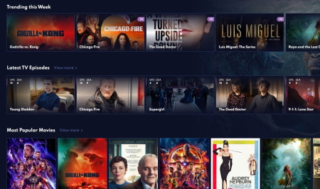

In this project, I developed an ETL pipeline using Python to extract football match data from JSON files.
The pipeline transforms nested JSON structures into flat, SQL-compatible tables. The data is then used to create an animated
simulation of the match, visualized on a Streamlit app. This allows users to interactively explore player positions
nd ball movements throughout the game, providing insights into match dynamics and player performance.

In this project, I conducted a correlation analysis of ten different cryptocurrencies to examine how
their prices influence each other. The analysis revealed that while all nine altcoins show good
correlation with Bitcoin (BTC), some have even higher correlations with each other than with BTC.
This insight is crucial for maximizing profits by selecting the most correlated coins to buy.
Additionally, it aids traders in diversifying their portfolios by investing in coins with
low correlation values, ensuring that if one coin's price drops, the others remain stable.

In this project, we conducted a comprehensive correlation analysis of various movie-related variables to determine
their direct influence on a movie's gross revenue. By examining factors such as budget, genre, cast, and release date,
we aimed to identify key drivers of financial success in the film industry.
This analysis provides valuable insights for movie producers and investors, enabling data-driven decision-making to maximize box office returns.

In this project, we analyzed the relationship between hotels' average daily rates (ADR) and booking lead times.
We began by cleaning, transforming, and aggregating various datasets into a comprehensive dataset and filtering out canceled bookings.
Using simple linear regression, we then explored how booking lead times influence ADR.
This analysis provides valuable insights for hotel pricing strategies and can help optimize revenue management practices.
In this project, we utilized SQL to explore global COVID-19 data. By analyzing the data, we identified trends, patterns,
and extracted meaningful insights. This exploration provided a deeper understanding of the pandemic's impact
across different regions, aiding in data-driven decision-making and response strategies.